Paper workflows / Updated comparison / 20 October 2026
Updated YSpecpp comparisons
A dated record of new comparisons using pinned YSpecpp source. Figures 1–4 have completed YSpecpp comparisons; Figure 7 has a separate, independently reviewed tidal-resolution diagnostic. The remaining cases are listed by status below.
Figure 1 · Bolivia vertical displacement spectrum
The primary comparison is the amplitude of the raw complex-frequency vertical displacement spectra over matched positive-frequency bins from 0.1–5 mHz. No filter is applied to these raw spectra. A separately filtered finite-time trace comparison follows; its metrics are not the spectrum metrics.

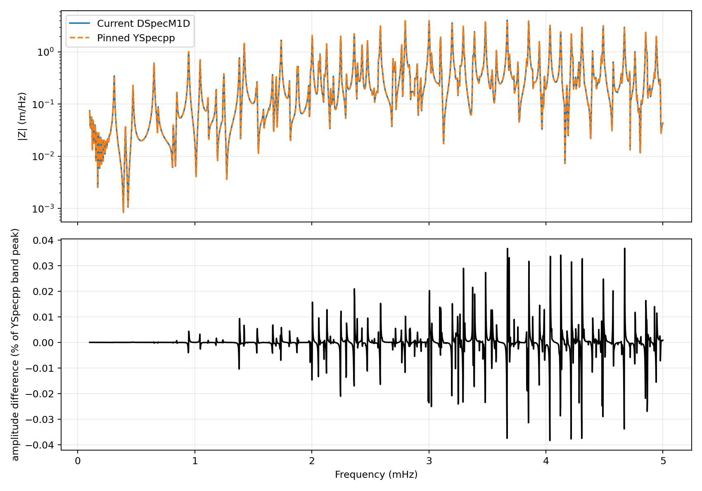
| Product | Mean difference | Maximum difference | Relative L2 |
|---|---|---|---|
| Raw spectrum amplitude | 0.00199% | 0.0383% | 0.000690 |
The values above compare raw spectral amplitudes, normalized by the YSpecpp peak amplitude. The paper reported mean 0.007% and maximum 0.28% for DSpecM1D–YSpec, and mean 0.01% and maximum 0.43% for specnm. Those are historical comparator-specific context; different processing and continuous model representations prevent treating them as a strict gate or a direct improvement claim.
Adopted windowed spectrum · secondary view
A separate paper-style display was derived from the saved raw spectra. It applies a 5% pre-window, the 0.1, 0.2, 4.9 and 5.0 mHz half-cosine taper, then a 50% final window. These window parameters are an adopted legacy processing choice; the paper does not state them. This processed product is reported separately from the raw spectrum above.

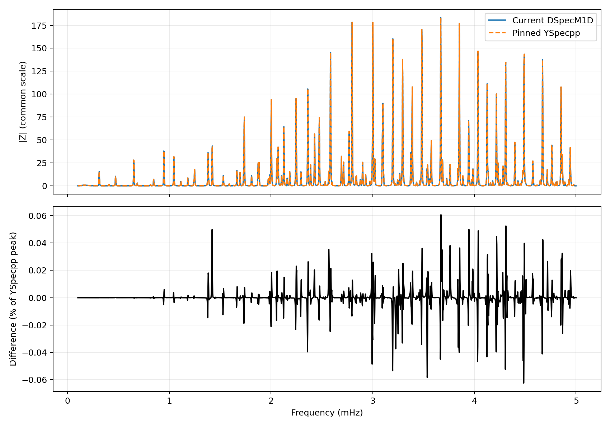
| Product | Mean difference | Maximum difference |
|---|---|---|
| Adopted windowed spectrum amplitude | 0.00303% | 0.0624% |
Both values are normalized by the YSpecpp band peak. The postprocessing manifest and hashes of both raw spectrum inputs are included in the Figure 1 JSON record.
Filtered finite-time traces
This companion product compares filtered displacement time traces over the 100-hour run. The shared half-cosine corners are 0.1, 0.2, 4.9 and 5.0 mHz. Its metrics describe time-domain traces and are separate from the raw spectrum-amplitude metrics above.

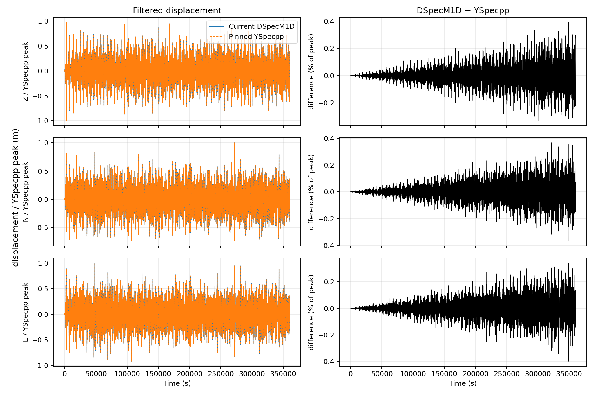
| Component | Mean difference | Maximum difference | Relative L2 |
|---|---|---|---|
| Z | 0.0449% | 0.391% | 0.00286 |
| N | 0.0441% | 0.367% | 0.00297 |
| E | 0.0457% | 0.399% | 0.00288 |
Run settings: TI PREM with ocean, no attenuation, full gravity; degrees 0–100; source depth 647.1 km and receiver depth 3 km; 6,000 minutes at 1 s sampling. The raw spectrum uses the full published-style 0.1–5 mHz band. The linked Figure 1 JSON records input hashes, exact metrics, solver versions, dependency pins, mesh settings and runtime provenance.
Figure 2 · Bolivia displacement
This is a new DSpecM1D–YSpecpp comparison using the published Figure 2 frequency band, degree range and five-hour output interval. It does not replace or alter the original publisher figure on the ex2 page. The published image remains the historical paper figure; this plot shows new run output.

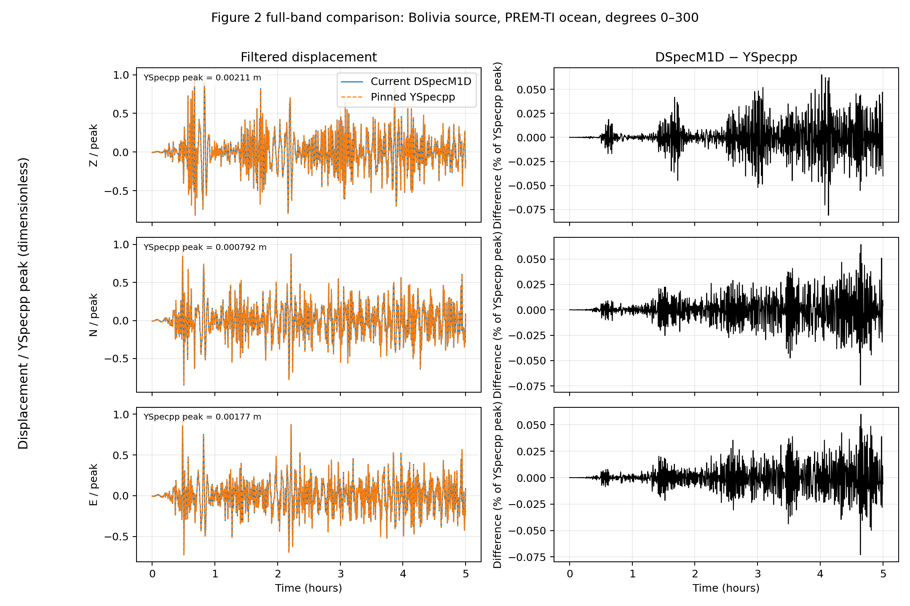
Measured agreement
The mean absolute difference is reported as a percentage of each YSpecpp component peak over the inclusive 0–18,000 s interval. The maximum pointwise difference is reported against the same component peaks.
| Component | Mean absolute difference | Maximum pointwise difference | Relative L2 |
|---|---|---|---|
| Z | 0.00934% | 0.0810% | 0.000657 |
| N | 0.00858% | 0.0741% | 0.000606 |
| E | 0.00762% | 0.0730% | 0.000612 |
The largest channel mean difference is 0.009337821%, below the protocol’s strict 1% limit. This is a result for this configured case and comparison protocol; it does not establish agreement for the other paper cases.
Run settings
- PREM-TI with ocean and without attenuation; full gravity; displacement in Z, N and E.
- Degrees 0–300; 1.5–21 mHz; 300 minutes at 1 s sampling.
- Five-point DSpecM1D SEM; relative solver error 1e-5.
- Source depth 647.1 km at geocentric latitude −13.82° and longitude −67.25°; receiver depth 3 km at geocentric latitude 80° and longitude 0°.
- Step moment source without extra source-time convolution; shared half-cosine filter corners 1.9, 2.0, 20.0 and 20.1 mHz.
The DSpecM1D and YSpecpp PREM interpolants differ: DSpecM1D interpolates velocities before constructing moduli, while YSpecpp splines elastic moduli. That model difference is recorded with the run.
Figure 3 · China acceleration comparison
The full comparison uses the attenuating, dispersive TI PREM model without ocean and reports acceleration in m/s². In the paper’s 400–1300 s surface-wave interval, the mean differences are 0.102%, 0.120% and 0.110% for Z, N and E. The paper annotations are 0.13%, 0.14% and 0.11%; the new result is broadly similar, with the east component nearly unchanged. No exact YSpecpp acceptance threshold was established for this case.

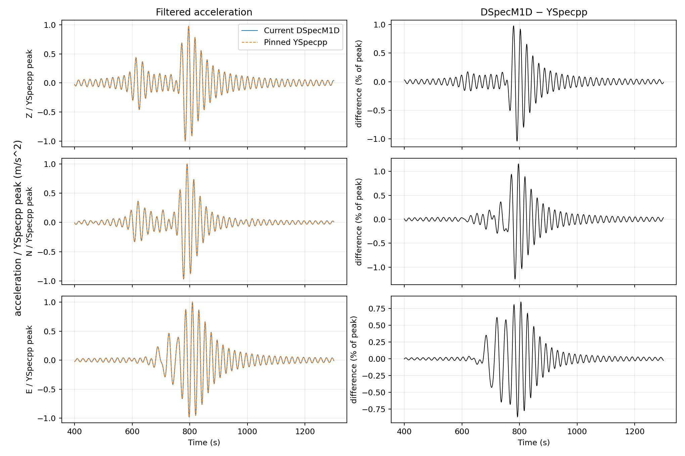
| Component | Surface-window mean | Surface-window maximum | Full-window mean |
|---|---|---|---|
| Z (m/s²) | 0.102% | 1.04% | 0.0264% |
| N (m/s²) | 0.120% | 1.25% | 0.0321% |
| E (m/s²) | 0.110% | 0.867% | 0.0386% |
Raw vertical spectrum
This separate plot shows unfiltered raw complex-frequency vertical acceleration spectrum amplitude over matched 0.1–51 mHz bins. Its mean amplitude difference is 0.0828% and maximum is 0.456%, normalized by the YSpecpp band peak.

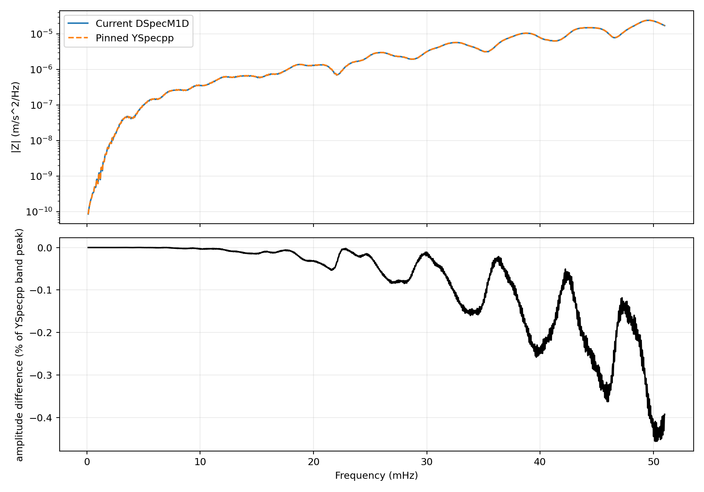
Settings: degrees 0–750; 0.1–51 mHz; 240 minutes at 1 s; half-cosine filter corners 0.1, 0.2, 50.0 and 50.5 mHz; source depth 33 km; TLY receiver at geocentric latitude 51.68° and longitude 103.64°, with 0 km receiver depth in the no-ocean model. The shared coordinates are geocentric, converted at the YSpecpp input boundary. Full-window metrics, exact normalization, input hashes, solver versions, dependencies and runtime provenance are in the Figure 3 JSON record.
Figure 4 · China acceleration comparison
The full published-style comparison uses the attenuating, dispersive TI PREM model with ocean and reports acceleration in m/s². In the paper’s 400–1300 s display interval, mean differences are 0.1167%, 0.09351% and 0.1138% for Z, N and E; maximum pointwise differences are 0.994%, 0.705% and 0.894%. These are case-specific comparison measurements, with no universal acceptance gate asserted.

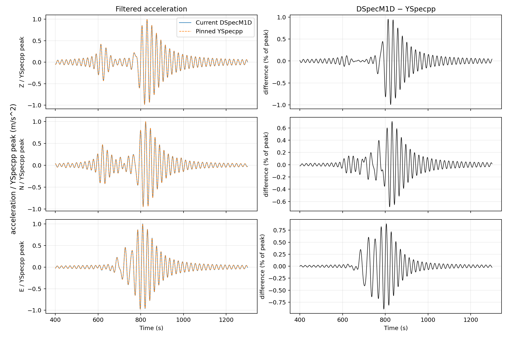
| Component | Display-window mean | Display-window maximum | Full-window mean |
|---|---|---|---|
| Z (m/s²) | 0.1167% | 0.994% | 0.03555% |
| N (m/s²) | 0.09351% | 0.705% | 0.03061% |
| E (m/s²) | 0.1138% | 0.894% | 0.03909% |

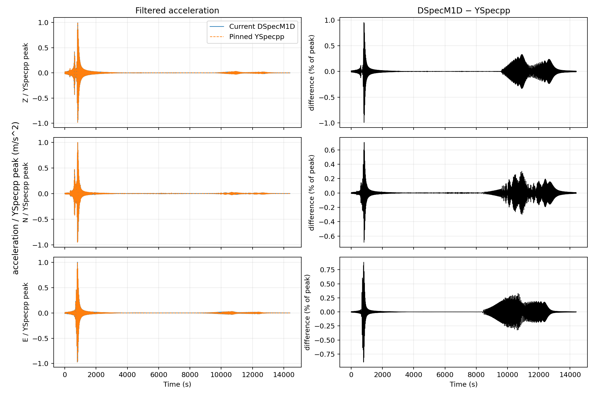
Raw vertical spectrum
The unfiltered raw complex-frequency Z acceleration spectrum over 0.1–51 mHz has mean amplitude difference 0.07075% and maximum 0.3615%, normalized by the YSpecpp band peak.

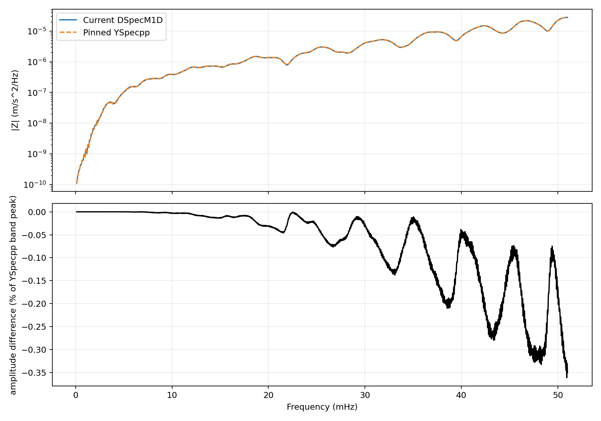
Settings: degrees 0–750; 0.1–51 mHz; 240 minutes at 1 s; source depth 33 km; receiver at the seafloor (3 km depth); full gravity and attenuation with ocean. The shared half-cosine filter corners are 0.1, 0.2, 50.0 and 50.5 mHz. Full-window and raw-spectrum metrics, model/source hashes, solver and dependency versions, and runtime details are in the Figure 4 JSON record. A separately windowed legacy spectrum metric is recorded there and is not conflated with the raw spectrum.
The publisher image remains the original on the ex3 page; these are new run outputs.
Figure 7 · degree-2 tidal resolution diagnostic
This DSpecM1D-only study compares normalized response shapes across three mesh resolutions and four forcing periods. Its independent saved-evidence review passed on 20 October 2026. It is separate from the YSpecpp agreement results above.

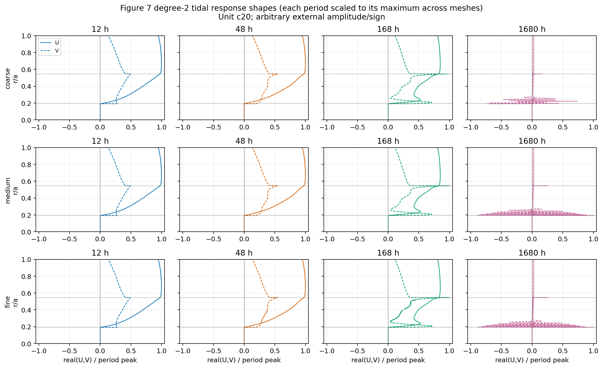

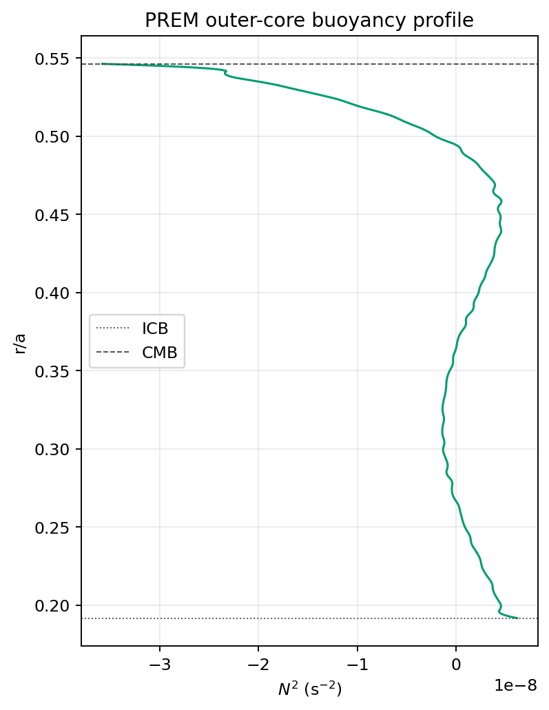
All 12 solves satisfy the 1e-12 normwise backward-error limit; the largest saved value is 4.78e-20. The largest relative-L2 right-hand-side residual is 2.30e-7 and is a solve diagnostic, not an accuracy certificate. The discrete maximum Brunt–Väisälä period is 9.224 h, computed from the negative minimum of N² over the outer core.
The forcing is a degree-2 unit dimensionless potential, with NQ=5, full self-gravity and no attenuation or ocean. The four periods are 12, 48, 168 and 1,680 hours. Because the paper does not specify the coefficient amplitude or sign, these plots show normalized response shapes only, not absolute Sun/Moon tidal amplitudes. One-sided radial samples at material interfaces are retained. See the Figure 7 settings and provenance JSON.
Other paper cases
- Figure 3 / ex7: full cross-solver comparison and independent review complete; results are shown above.
- Figure 4 / ex3: full cross-solver comparison and independent review complete; results are shown above.
- Figure 5 / ex4: blocked at the GSH high-degree safe-degree guard of 1827; the paper setup requires degree 7500, so no valid high-degree result is available. The paper also does not identify the plotted quantity; acceleration is only the adopted legacy convention.
- Figure 6 / ex5: a cost pilot is complete; the full scientific convergence sweep awaits a resource decision. No convergence result is claimed.
- Figure 7 / ex6: 12 degree-2 tidal runs and independent saved-evidence review are complete; the resolution/stability results are shown above. This is not a YSpecpp accuracy comparison.
Version and provenance
DSpecM1D source commit 3597c6f131c1f31fc4273cfbc8a9bb828136cbb8; YSpecpp commit 84be5a6cbe442324c164e5193a66b0911fca5860. The pinned YSpecpp dependency commits, input hashes, protocol hash, benchmark-harness file hashes, runtime settings, frequency grid and filter details are recorded in the comparison summary JSON. Its provenance digest identifies the full run record.